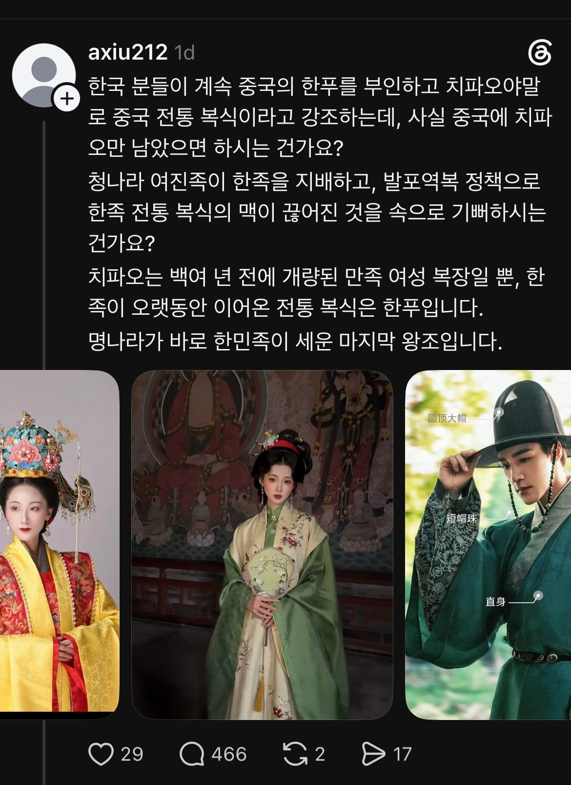
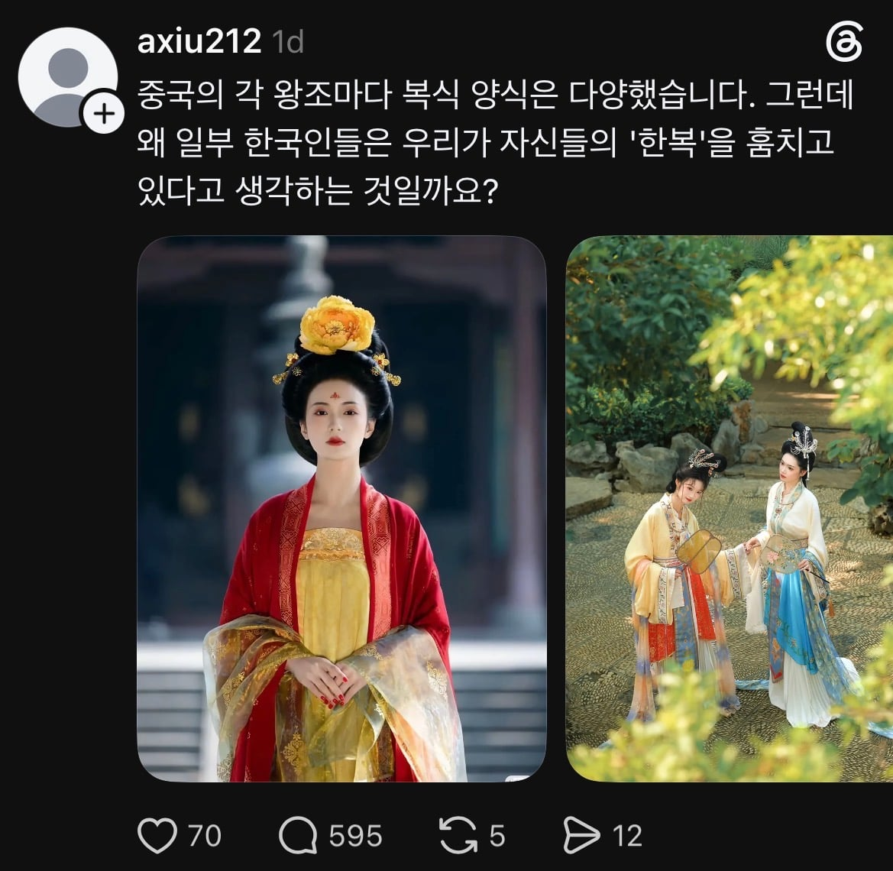
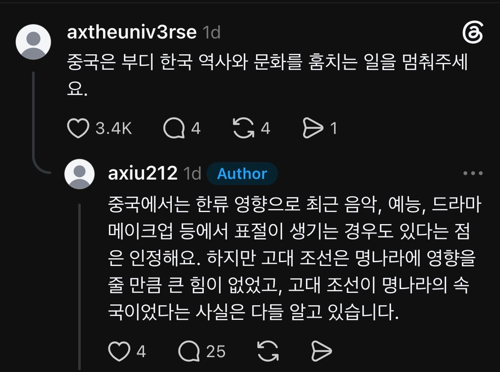
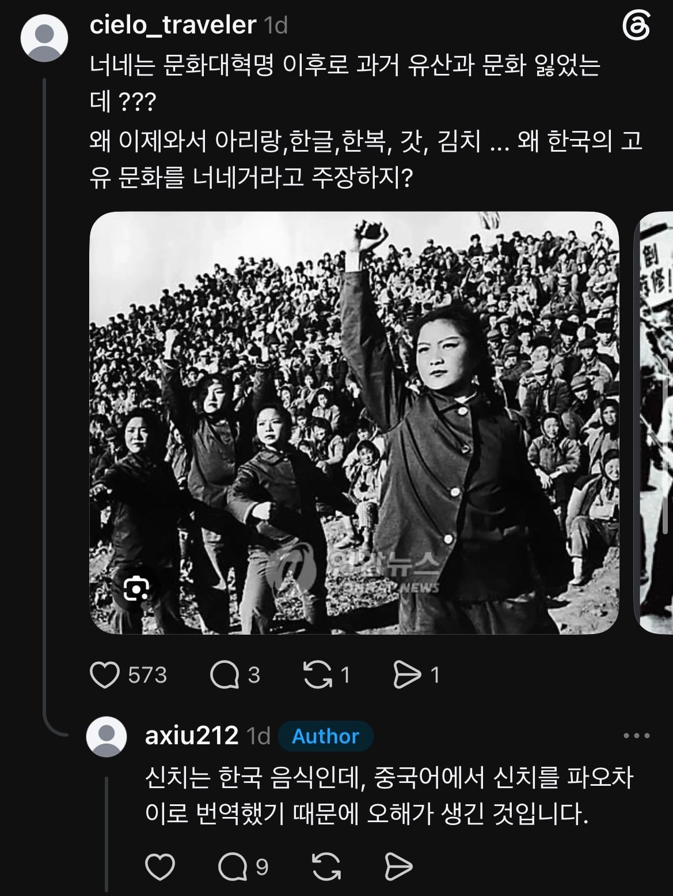
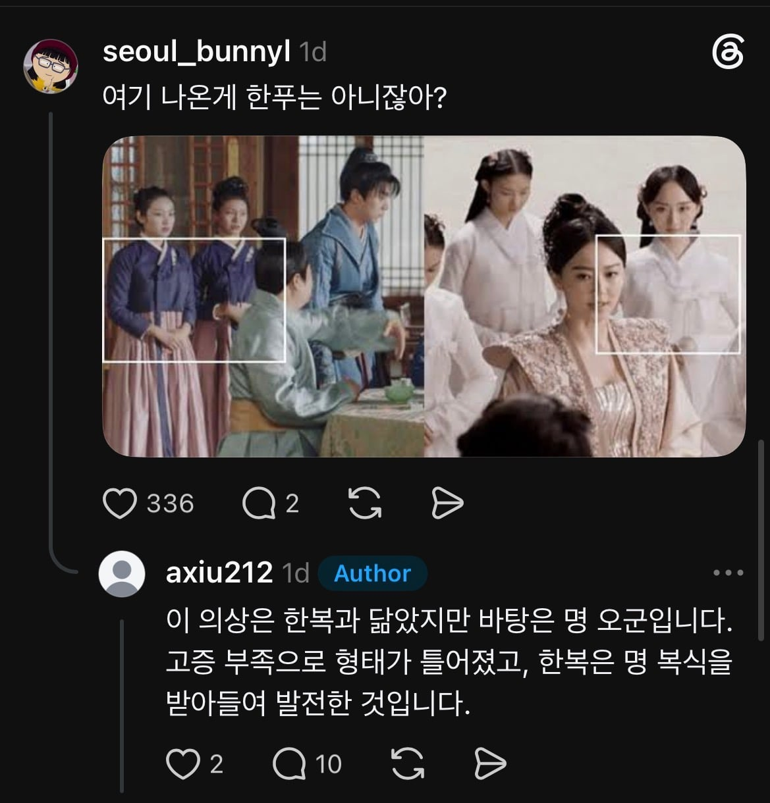

한국이 명나라 속국이었다는 씹소리는 덤





한국이 명나라 속국이었다는 씹소리는 덤
조선이 명의 속국은 맞지 않나...?
속국의 의미 검색해봐 완전아님
그렇네
속국이 내가 생각했던거랑 좀 뜻이 다르네
조공은 말은 바쳤다고 하지만 그 시대에서는 무역에 가깝다고 보면 됨
받는입장에서 답례를 해야하는데 큰 나라가 쪼끔 주면 자존심 상하는일이라 ㅈㄴ 퍼줬다가 나중엔 조공 바치러 적당히 오라고 말릴정도였음ㅋㅋㅋ
지금의 미국과 우리나라의 관계랑 당시 조선과 명의 관계가 비슷함
홍치제가 오랑캐 옷이라고 선 그어놨는데 이젠 지들거라 하네 븅신들이
??? : 야이 시발럼들아 궁에서 고려옷 좀 그만 입어라
고려양이었나? ㅋㅋㅋ
고려양. 고려풍이라고도 한다. 고려의 문화가 원나라에 퍼진 현상을 뜻한다. 고려의 대몽항쟁이 끝난 후 고려 출신 공녀들과 환관들이 원나라로 끌려가 궁궐의 후궁이나 궁녀, 시첩이나 시비가 되거나 군사들의 아내가 되었다. 이렇게 원나라 황실 내부에 고려인이 많아지다보니, 이들을 통해 고려의 풍습이 전파되고 유행하게 되었다. 특히 의복, 신발, 모자 등의 복식과 만두와 떡 등의 음식 등이 급속도로 전파되었다. 또한 검은 빛을 띈 푸른 색도 '아청'이라 하여 유행하였다.
이러한 고려양은 원나라부터 명나라때까지 유행했는데 명나라 건국 후 100년 후인 홍치제 시대에야 원래 중국 풍습이 아니라는 이유로 금지되었다. 특히 의복에서 풍성한 치마와 저고리 스타일, 남성의 두루마기 등이 전형적인 고려양의 영향을 받은 복식이다. 아직도 몽고족 사회에서는 고려만두, 고려병, 고려아청 등의 용어가 사용되고 있으며, 상추에 쌈을 싸 먹거나 시루에 떡을 해 먹는 풍습도 남아 있다. 현대 중국에서 고려양의 영향을 받은 의복을 근거로 '한복이 한푸의 일종이다' 라는 역사왜곡시도가 나오기도 했다.
어차피 저짝은 진실을 말하면 착해지잖아 불쌍타
명나라가 한족이 세운 마지막 왕조인데 늬들은 청나라를 잇는 국가라메
그럼 늬들이 한족이여 만주족이여 모든 말에서 모순이 비온뒤 죽순보다 빠르게 솟아나네 ㅋㅋㅋㅋㅋㅋㅋ
청나라는 참 싫어한단말이야...
몇 안되는 만주족한테 먹혀서그럼 ㅋㅋㅋ
ㅋㅋㅋ추하다추해….청나라 유산 가지고 배짱부리면서
ㅋㅋㅋㅋ 그렇게 말할거면 청나라를 부정하고 그냥 몽고에게 나라를 다 바치지 그래?
정확히는 엄연히 조공국의 위치였지 속국이랑은 좀 다르지
응 2010년부터 막 만들어낸다고
한푸라는게 뭔 우주복 색감임 ㅋㅋ
짱1개들이 건방지네? 지네 역사책에 고려양이라고 고려옷 입는게 유행이었다고 나와있는데 하여간 날조 왜곡 도가튼 넘들임 미개한 짱1개색히들
우리가 조공 물품을 바치면 명에선 그보다 더 많은것을 하사품으로 돌려줬었는데 뭔소린지 모르겠네
하사품으로 더 많은걸 돌려준 이유도 황제가 되어서 왕이 조공품으로 바친것보다 적게 하사품을 내려줄 수는 없어서 체면상 더 많은것을 준다 라는 이유라고 기록까지 되어있는데 그럼 우리가 더 받은게 많은데 왜 우리가 속국이야?
그냥 우리가 줄 수 있는건 주고 받아올 수 있는건 받아온 거래상대였을 뿐이지 뭔 개소리야
다만 당시에는 우리가 중국에서 시작된 유교를 통치 기반으로 삼고 있었으니까 그 기반국이 되는 명국을 우대했을 뿐인거지
속국이 된게 아닌데 저딴소리 하는거 보면 참....
지들이 분서갱유 문화혁명 하면서 책/문화 죄다 말살시켜놓고 지들꺼라고 우기는건 대가리가 많이 모자라서 그러는건가?
진짜 얼마나 멍청하면 저따위 소리를 하는건지 궁금함 근거를 지들이 다 불태워놓고 근거도 없이 떠드는거보면 진짜....
그딴 팩트는 중요한게 아님
아무튼 속국이고 우리 신하였다만 쏙 가져와서 중화사상을 강화하면 되니까
홍콩 받아올땐 영국에 청나라 국채도 갚아준게 유머
짱1깨부인
저새끼들은 고증이랍시고 드라마 짤을 캡처해오는 병신들인데 무슨 대화가 되겠나
조공국이지 속국은 ㅆㅂ